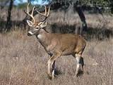

La principal flora es de pastos y olmos en las zonas planas y coníferas en las montañas, la fauna está representada por aves migratorias, como el ganso canadiense, los chanates y otras especies venado cola blanca, puma, gato montés y coyote. Demografía
|  |